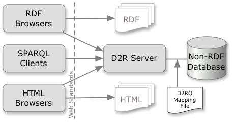

The D2RQ Platform is a system for accessing relational databases as virtual, read-only RDF graphs. It offers RDF-based access to the content of relational databases without having to replicate it into an RDF store. Using D2RQ you can:
- query a non-RDF database using SPARQL
- access the content of the database as Linked Data over the Web
- create custom dumps of the database in RDF formats for loading into an RDF store
- access information in a non-RDF database using the Apache Jena API
D2RQ is Open Source software and published under the Apache license. The source code is available on GitHub. You can contact the dev team on the D2RQ mailing list at d2rq-map-devel@lists.sourceforge.net.
News
- Version 0.8.1 released. This release adds support for W3C's Direct Mapping, a new
d2r-queryscript for command-line SPARQL querying, a comprehensive set of options for including or excluding specific tables and columns, metadata for each resource and the entire dataset in D2R Server (including VoID support), an option for specifying SPARQL query timeouts, and D2R Server default settings that work better for large databases. For full details, see the release notes. 2012-06-22 - Free webinar on D2RQ. As part of the LOD2 project's series of webinars on Linked Open Data topics, Robert Isele will present a session about D2RQ on Tuesday, April 24th. Sign up here, or see here for more information. 2012-04-21
- Poster on D2RQ/Update at WWW2012. Vadim Eisenberg's D2RQ/Update extension will be presented next week in the poster session at the WWW2012 conference in Lyon, France. See the poster here. 2012-04-13
- Version 0.8 released. New features include preliminary SPARQL 1.1 support, Firebird support, generation of RDFS/OWL schemas for databases, and download maps for making the content of CLOB/BLOB columns accessible via HTTP. Datatype compatibility with Oracle, MySQL, SQL Server and HSQLDB has been greatly improved, and a truckload of bugs have been fixed. For full details, see the release notes. 2012-03-12
Overview and Features
The D2RQ Platform consists of:
- the D2RQ Mapping Language, a declarative mapping language for describing the relation between an ontology and an relational data model. More…
- the D2RQ Engine, a plug-in for the Jena Semantic Web toolkit, which uses the mappings to rewrite Jena API calls to SQL queries against the database and passes query results up to the higher layers of the frameworks.
- D2R Server, an HTTP server that provides a Linked Data view, a HTML view for debugging and a SPARQL Protocol endpoint over the database. More…

Database Compatibility
- Supported databases
- Oracle
MySQL
PostgreSQL
SQL Server
HSQLDB
Interbase/Firebird - ODBC data sources
- D2RQ can connect to ODBC data sources like MS Access using an ODBC-JDBC bridge. This works with some limitations. We recommend using a dedicated JDBC driver for the database in question.
- Other databases
- May or may not work. By default, D2RQ interacts with the database using the SQL-92 standard. Any compatible database should work out of the box. We are interested in reports about D2RQ on other databases.
See Database compatibiliy on the D2RQ wiki for more details.
Acknowledgements
- Maintainers
-
Richard Cyganiak
- Project founder
- Chris Bizer
- Contributors
-
Luís Eufrasio Teixeira Neto
Hannes Mühleisen
Aftab Iqbal
Jacobus Geluk
Giovanni Mels
David Venable
Christian Becker
Olaf Hartig
Andreas Langegger
Herwig Leimer
Inigo Surguy
Oliver Maresch
Jörg Garbers
- Contributing organisations
- FU Berlin, DERI, UCB, JP Morgan Chase, AGFA Healthcare, HP Labs, Johannes Kepler Universität Linz